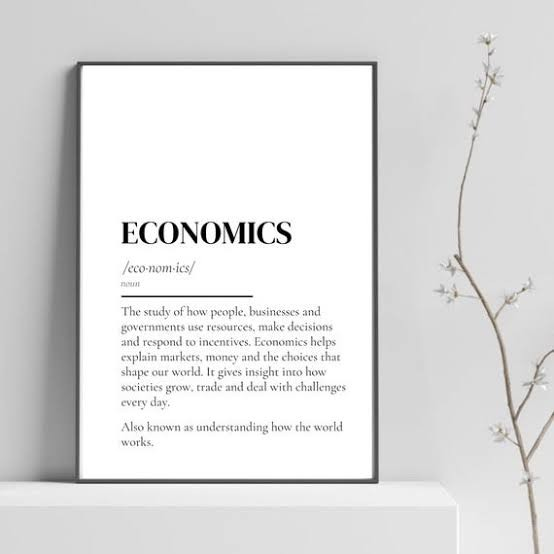

LEARN THE LANGUAGE
Key Definitions
Tap or click a flashcard to reveal its meaning.

STUDY MODE
17 key definitions
Test yourself before revealing each answer. Select a card again to turn it back.
Tap or click a flashcard to reveal its meaning.

Test yourself before revealing each answer. Select a card again to turn it back.